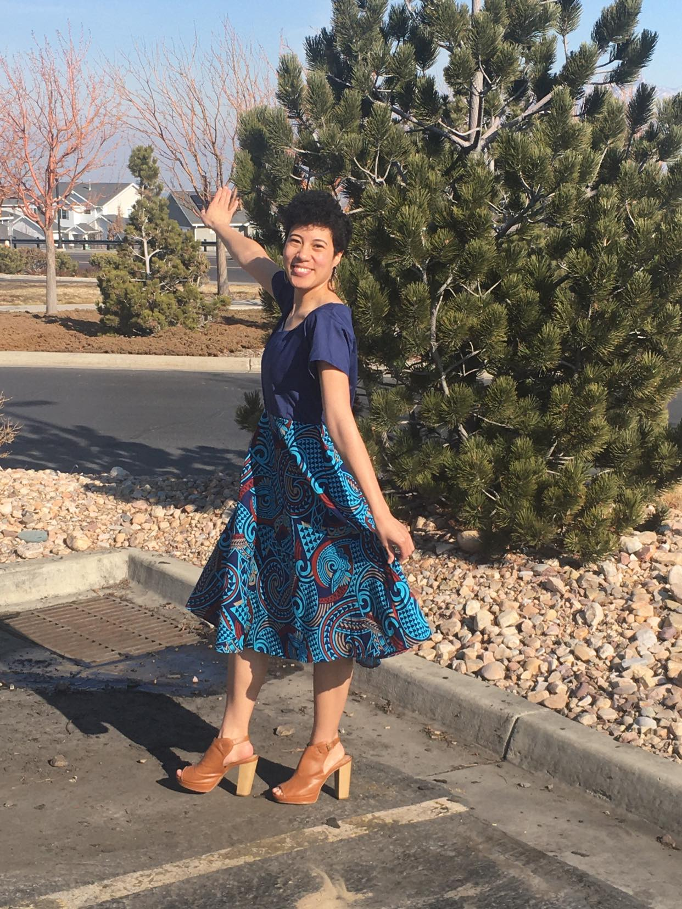

Hello everyone! I am Natalie Falemaka but most people call me Nat. I am from West Valley City, UT. I am 24 years old, Tongan and I am the oldest of 4. The degree I’m working on getting is my BA’s in Applied Technology. I want to eventually become a Data Quality Assurance Tester as a career. I love to read autobiographies. I’m currently reading the autobiography of Nelson Mandela “Long Walk to Freedom.” I enjoy learning about other people’s lives and how they cope with life’s punches thrown at us at times. I also love learning to cook a new recipe. I’m not good at cooking but it’s a new goal of mine to get better at it. I also love music, playing the piano and learning to speak Tongan. I am not married and don’t have any kids. I live with my parents and two younger brothers for now. Eventually I plan to move out when the time is right.
I am currently a Material Distribution Technician for a company called ARUP. I love working at the warehouse because of the people and the exercise I get from moving around a lot. However, I don’t want to work here forever. I am making a difference by going to school because I want to eventually help my family financially so we can get a house of our own instead of moving around and staying at an apartment.
The thing that I love most about BYU-I is the kind atmosphere of the school. I feel safe to ask questions and don’t feel “dumb” for asking. I don’t really know the advantages of knowing web design yet. I only took the class because it was on my graduation plan after I completed Pathway. I am excited though to see how it will benefit me in my learning for my career.
I have been a member for the Church of Jesus Christ of Latter-Day Saints for a little over 11 years. Currently I love the talk “Worthiness Is Not Flawlessness” by Brother Wilcox. I think everything in his talk is beautiful especially when he said “We are not just walking toward God and Christ. We are walking with Them.” My favorite scripture right now is Alma 13:27-30. I found that scripture a few weeks ago and it struck me hard at the center of my heart that it’s now become my new year’s theme.
I am excited for what’s ahead and for this class. I hope to get along with everyone and I’m glad to be here!